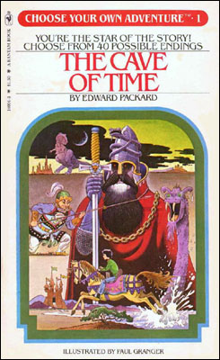

My First Computer
Macintosh 512k
My First Code
BASIC
10 PRINT "Hello World!"
20 GOTO 10
My First Program
Choose Your Own Adventure

Never be afraid to say "I don't understand".
Never make fun of someone for not understanding.
Always be willing to share what you have learned and coded.
Unless it's homework or a test.
What Kind of Jobs can a Computer Programmer Do?
From learning to code to working for major companies like Overstock and Zappos and The Whitehouse.
From employee to entrepreneur and the lessons learned along the way.
The Evolving Tech Landscape
How the tech industry has evolved since the early 2000s
including the rise of web
development, mobile apps, and cloud computing. And AI
Importance of adaptability and continuous learning in tech careers.
Real-World Skills Beyond Coding
Problem-solving, communication, and teamwork in software
engineering.
Project management, client interactions, and business acumen in consulting
and startup environments.
Wedgies.com and Codingscape.
If you can't find a job, start a company and give yourself a job.
The challenges and rewards of entrepreneurship.
Building a Career that Lasts
Keep skills relevant in a fast-changing industry.
Networking and finding mentors.
Product management, DevOps, UX design, and data
analytics.
Practical Advice for Students
Getting internships and entry-level jobs.
Side projects and contribute to open-source.
Questions?
I have
some
if
you
don't
Will AI my programming obsolete?
Am I
going
to
learn
everything
I
need
to
know
in
school?
Is
writing
code
pretty
much
the
most
fun
thing
ever?
Is
writing
code
going
to
make
me
rich?
Did
you
REALLY
make
a
website
called
Wedgies.com?